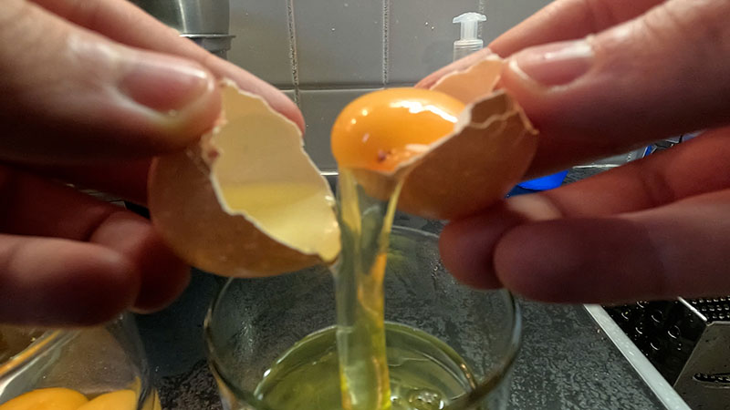
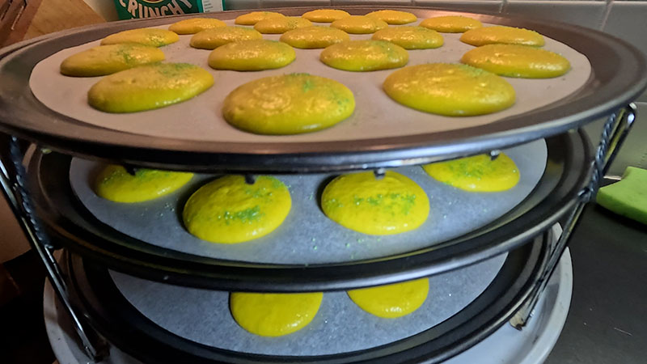

Introduction
Over some time of making macarons, I have come to learn a lot, and figure out my own ways on how I can work best with the tools I got available to me. I have got a reasonably small kitchen, and quite an old combination oven. Had to find the right flat, round, and fitting trays, make my own macaron stencils, and had to come up with techniques to bake more macaron shells at once. I have also been tweaking on the initial recipe, and by now can say I am making my own macarons.
There are so many different possibilities for flavoring macarons, it is as endless as human creativity can go. So, I will be using my most popular macaron to explain my process. Which is the white chocolate lemon ganache, with a lime curd in the center. I will give a good description of my work process, I will not however, reveal the quantities I will be using.
How I start
My first step would be making the fillings for the macarons and separating the egg whites from the yolks. This I usually do the day before I make the macaron shells/cookies. Some fillings need to rest overnight, but besides that, I like to have them on standby. Besides that, I prefer if the egg whites also have some time to rest, to release some moisture, since too much moisture is not something you want with macarons. And some fillings I will be making also need the egg yolks. I mostly go for chocolate ganache, curd, (Italian) butter cream, jam, or fresh homemade caramel.
Also, the ground almonds I use are still not fine enough, at least not to my liking. So, I sift the ground almonds with a fine sift, so I am only left with the finest ground almonds. The rough ground almonds I am left with I use for other pastries/cakes, like my favorite lemon almond cake.
Fillings
White chocolate lemon ganache:
Ingredients:
- White Chocolate
- Heavy cream (high fat percentage whipping cream, minimum 35%)
- Lemon zest
First, I will grate a lemon to get enough lemon zest. Then I cut the white chocolate in tiny pieces with a knife, cubes of half a centimeter, while the heavy cream is heating up in a cooking pot. When the heavy cream starts to steam a little bit, just before it starts to bubble, I take it of the fire, and stir half of the chocolate through the heavy cream with a silicone spatula. When the chocolate has completely dissolved and is well mixed with the cream, I will add the rest of the chocolate. At this point the mixture has already cooled down quite a bit, which helps with keeping it the right consistency. The hotter the chocolate melts, the more crystals it loses, which will make the consistency more liquid. And lastly, when the chocolate and cream have become one, I will add the lemon zest. Then I seal it in an airtight container and let it rest in the fridge. Next day it will be ready for use when the macaron shells are finished.
Lime curd:
Ingredients:
- Egg yolks
- Unsalted butter
- Granulated sugar
- Lime zest
- Lime juice
- Salt
Again, I start with grating, this time the limes, but now I will also squeeze them for their juice. Then I put a cooking pot with about 3 centimeters of water on the fire and put a small bowl above the water. The water will not go into the curd, but will be used to regulate the temperature at which you heat the curd.
To the bowl, I will add the egg yolks, sugar, lime juice, and the salt. This mixture must be contently stirred with a whisk, while the steam of the water warms the mixture but doesn’t overcook it. Then when the mixture starts to thicken, I will add the lime zest and keep stirring till the mixture is thick enough. When I am happy with the thickness, I take the bowl of the pot with water and mix it together with the butter. When it has become a nice smooth mixture, you could add coloring to make it more vibrant.
Then its time to let it chill for a while in the fridge, I always put plastic foil directly on the top, otherwise a hard layer will form on the curd. After a few hours it should be cool and ready to use, I usually let it rest overnight.
Last but not least, the macaron shells (cookies)
Ingredients:
- Egg whites
- Ground almonds
- Granulated sugar
- Powdered sugar
- Cream of tartar
- Coloring powder
The preparation
Before I start the baking, I make sure I have the stencils with baking paper over it and the piping bag ready to go, for when the macaronage is ready. So it can go directly into the piping bag, and start piping the macaron cookies. Also weighing all the ingredients with some precision is really important, since the cookies react quite strongly to slight changes, you want the quantities to be just right.
Mixing everything together
Then it is time to start mixing the ingredients, first the egg whites with a little cream of tartar and the sugar. The cream of tartar stabilizes the egg whites, this gives nice and stable merengue, perfect for the macaronage.

While the egg whites are mixing in the stand mixer, I have time to mix the ground almonds and icing sugar (powdered sugar). First, I sift both ingredients in one bowl, which I then stir together with a spoon. When they are mixed well enough, I put the almond-sugar mixture in a kitchen machine to grind and mix them even better. After a few pulses of the machine, I put the mixture back in the bowl through the sift again. Now the almond and sugar mixture is ready for the merengue.
Before the merengue is firm enough, I will add the coloring to give the macarons the vibrant color they are known for, in this case for the lemon and lime macaron I use a yellow coloring powder. Maybe also some drops of coloring gel, but preferably coloring powder, since I do not want to add liquids to the merengue. It is better to keep everything as dry as possible for the best results.

The macaronage
After a short while of mixing, the egg whites and sugar should have formed a nice and smooth merengue, with firm peaks. That the time to mix everything together and create what is called the macaronage. I will add the almond and sugar mixture in three parts to the merengue. Every part is sifted again, to make sure there are no clumps. Stirring the mixture gently till all the three parts are incorporated.
The most important part is that I do not under stir or over stir the macaronage. If I leave to much air in the macaronage the cookies will crack open. If I over stir and the macaronage becomes to liquid, and the cookies would sink in. So it takes practice to make the perfect macaronage. Stirring it till the mixture is stringy, that the macaronage slides of the spatula in a continues string and not sinking back into the macaronage instantly.

Getting the perfect size
The macaronage is finished, the piping bag is ready, I will put the macaronage in the piping bag. The trays with the stencils and baking paper are ready for the cookies. I will do my best to make every cookie the same size, so that two cookies can make a perfect macaron together.
After piping the cookies, I will drop the trays with the unbaked cookies from a few centimeters on the table, to spread out the cookies, make the outside smoother and get rid of some air bubbles. Then the most tiring process must be done. Well, does not have to be done, but to make sure that the macaron shells are nice and smooth, you do not want air bubbles in the cookies. And even after the step before, there will always be some air bubbles left. To get rid of those air bubbles I have to pop them one by one with anything that has a sharp point and can be handled with precision.
After all that is done is also decorate the macaron cookies from time to time. Most of the time with colored sugar. In this case I used green sugar, to represent the lime, while the rest of to cookie is yellow, to represent the lemon.

Baking and waiting
Then its time to wait, for around 30 minutes. It all depends on the humidity in the room at that moment. The higher the humidity, the longer the wait. This because you want a firm layer to form on the macaron shells before you bake them. This so that they get the smooth shell that rise and form the familiar edge. They are ready for baking when you can lightly touch them, and the macaronage batter does not stick to your finger. So, dry to the touch.
Time to bake. Since I have quite an old oven, I had to experiment a lot with times and temperatures to bake the macaron shells perfectly. And I am still experimenting with that.
After baking it is time to wait again, now till the macaron shells are completely cooled down again. When they are cooled down and at room temperature, they should let go from the baking paper without trouble. If they stick, they are underbaked. And I am being careful since the cookies are still fragile.

The finish line in sight
Having sorted the cookies to size, because even though I did my best, some might still differ in size in the slightest. So, I will sort them so they fit each other. And then its time to start filling them to give the macarons their unique flavor. In this case lemon and lime.
I get the fillings out of the fridge and put them in piping bags. First, I put a circle of white chocolate lemon ganache on one of the two macaron shells. Following that, in the center of that circle, I will put the lime curd. And lastly, I take the two cookies, one with the filling, the other still empty, and put them together to create one macaron.
The last bit of waiting
Now the macarons are finished you would think time to eat, but that’s not the case. Of course, you can try the macarons already, but they will not have the right texture yet. Best thing for the macarons is to store them overnight in the fridge, to let the cookies become one with the filling, then they are how macarons should be. But they must be eaten at room temperature, otherwise the macarons will be too chewy. So, after getting them out of the fridge, and waiting for about 30 minutes. It is finally time to indulge on the spectacular cookie that is called the macaron.